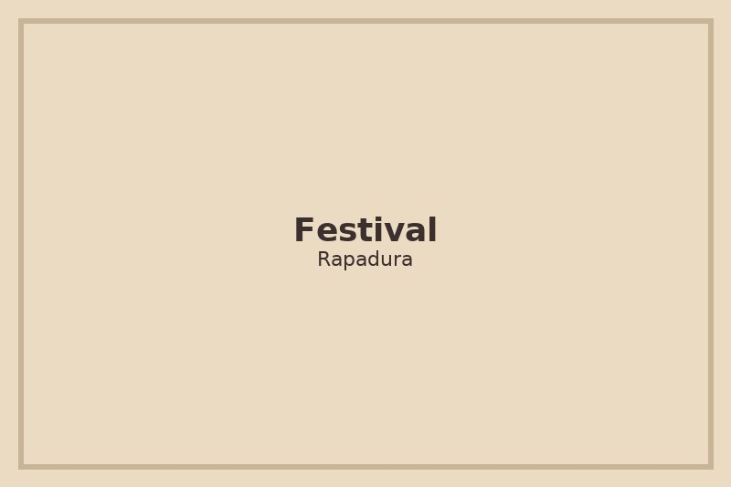
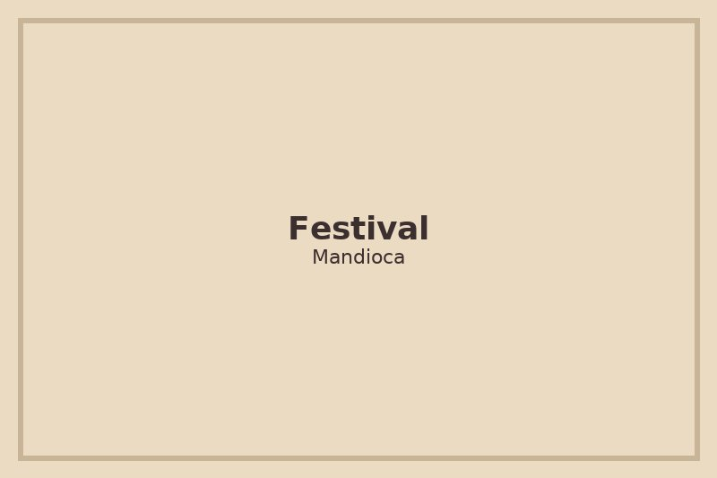
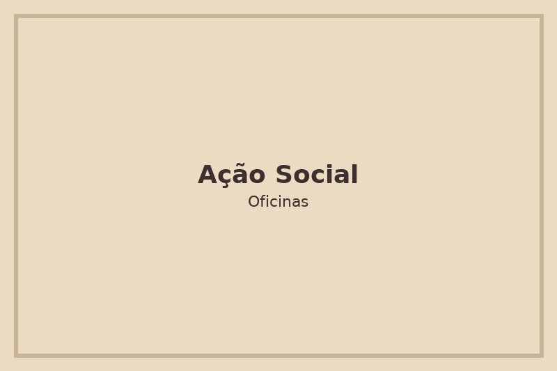
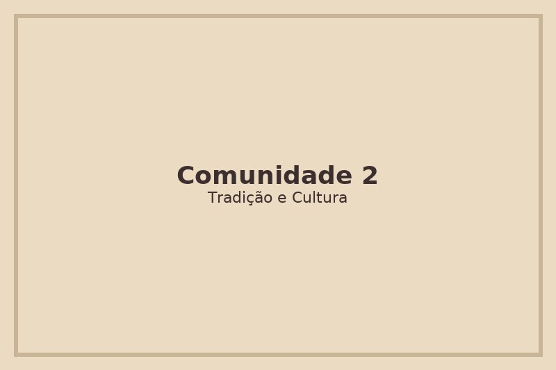

Próximos Eventos
-

Festival da Rapadura
Celebração com oficinas de produção, música e barracas de comidas típicas.
-

Festival da Mandioca
Degustações, oficina de receitas tradicionais e apresentações culturais.
-

Ação Social Quilombola
Atendimentos comunitários, feira e integração entre moradores e visitantes.
-

Festival Histórico
Exposições e encenações que contam a história da comunidade.